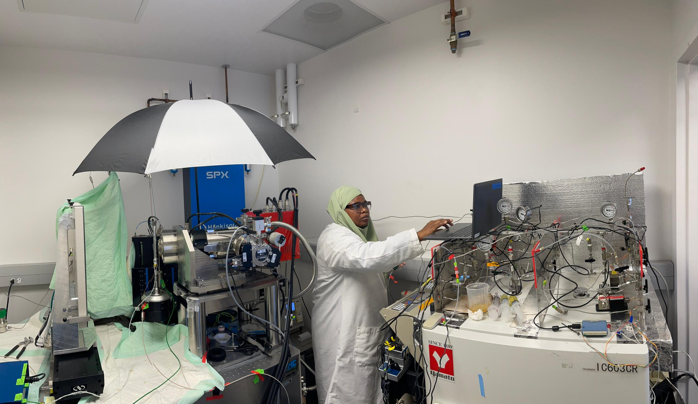
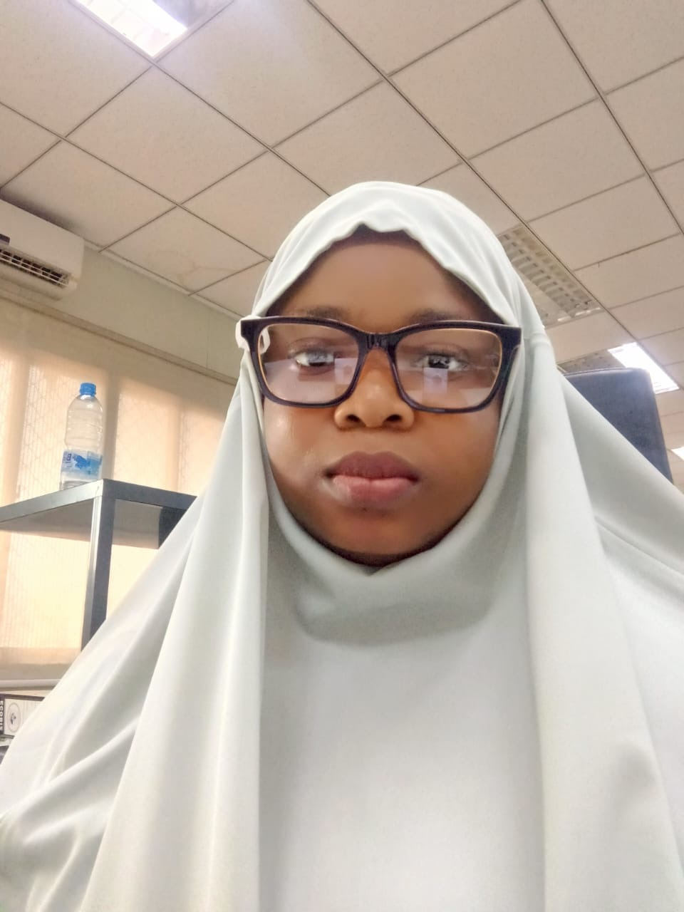
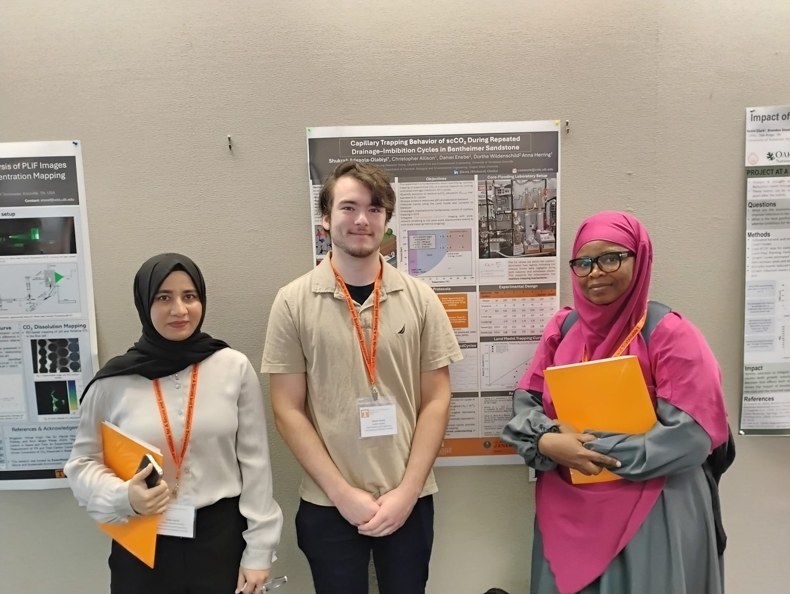
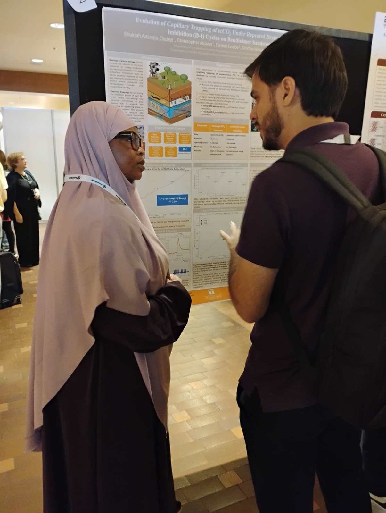
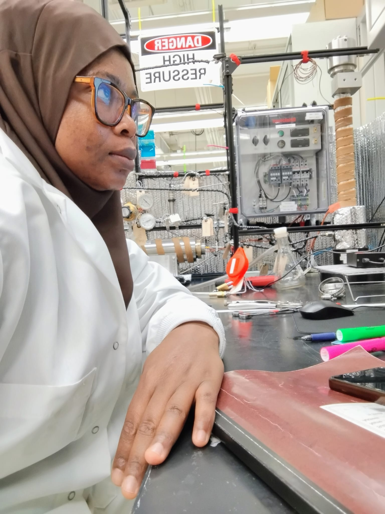
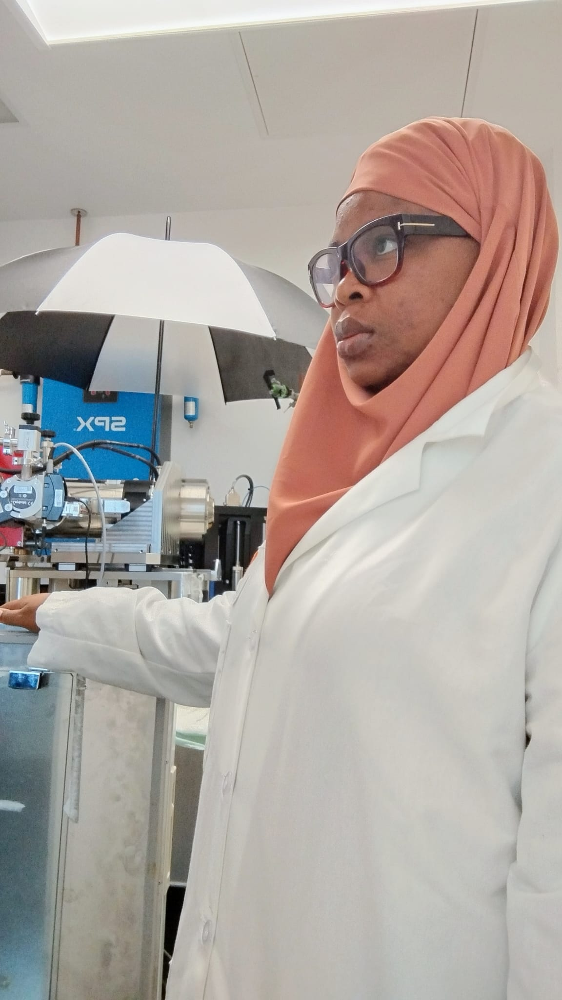
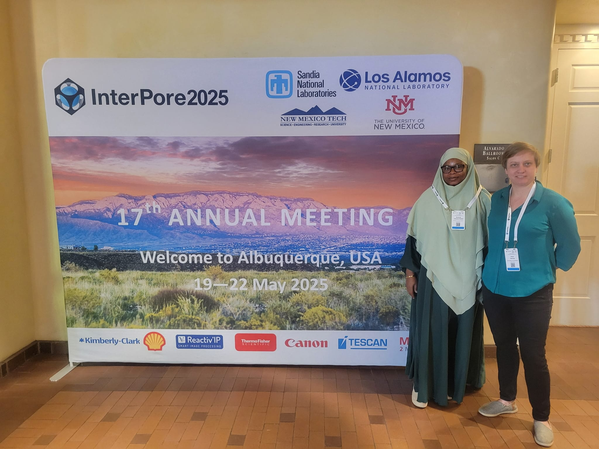
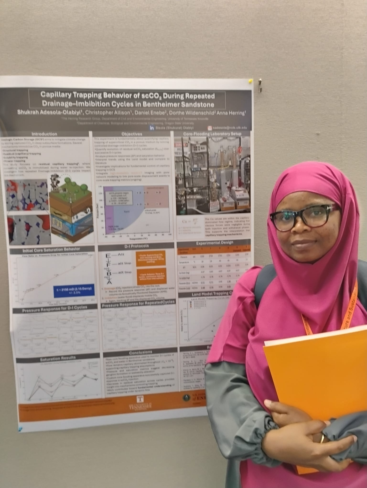

✕
Investigating the fundamental physics of CO₂ trapping in porous rock to unlock safe, permanent geological carbon storage — bridging the gap from pore-scale mechanics to reservoir-scale engineering.


I am a PhD researcher in Environmental Engineering at the University of Tennessee Knoxville, where I study the pore-scale and reservoir-scale behaviour of CO₂ in deep geological formations: work that sits at the technical heart of large-scale carbon capture and storage (CCS) solutions.
My path to this research was not linear, and that is precisely its strength. After earning my B.Tech in Chemical Engineering from Ladoke Akintola University of Technology and my M.Sc. in Chemical & Polymer Engineering from Lagos State University, I spent two years as a Process Engineer at Dangote Oil Refining Company — one of Africa's largest refineries. There, I led process optimisation initiatives, supervised catalyst performance evaluation teams, and worked under the pressure of real industrial operations.
That industry experience gave me a concrete understanding of the energy systems that must transition toward sustainability. It is what drives my conviction that fundamental research on carbon storage is not merely academic, it is essential infrastructure for a livable climate. My work today is motivated by both the urgency of that challenge and the precision it demands.
Beyond research, I am committed to broadening access to STEM because diverse perspectives are essential to solving the world's most pressing environmental challenges.



My doctoral research supervised by Dr. Anna Herring at UTK, investigates the physical and chemical mechanisms that govern how supercritical CO₂ is permanently trapped in porous rock during repeated injection cycles. This DOE Basic Energy Sciences-funded project directly informs the safety and long-term predictability of large-scale carbon capture and storage operations.
Investigating how repeated scCO₂–brine injection cycles alter rock surfaces and trapping behaviour. Detecting clay fines migration via ICP-OES effluent analysis and wettability changes via DRIFTS spectroscopy on core faces before and after flooding.
Running scCO₂–brine drainage and imbibition cycles on Bentheimer sandstone and Robuglass sintered glass at reservoir-relevant conditions (1,250–1,750 psi, 23–40°C). Measuring saturation via acoustic mass spectrometry and fitting Land trapping coefficients across experimental sets.
UTK core-scale Land C values and ICP-OES results directly inform which pressure–temperature conditions the OSU team prioritises for microCT pore-scale imaging — creating a multi-scale validation framework connecting fundamental physics to reservoir engineering applications.
Designing and executing high-pressure core-flooding experiments. Analysing 3D tomography data, performing image processing, and interpreting quantitative flow behaviour. Serving as Lab Manager for the Herring Laboratory.
Collaborated with cross-functional teams to develop safety protocols (30% reduction in workplace incidents). Supervised catalyst performance evaluation in the hydroprocessing unit. Led process optimisation and troubleshooting initiatives at one of Africa's largest refineries.
Head of Class. Research on membrane separation processes for wastewater treatment. Published work on adsorption kinetics of crystal violet into flamboyant pod biochar.
Teaching computer-aided design (CAD) principles for civil and environmental engineering projects. Supporting 40–60 undergraduate students with AutoCAD 2D/3D drafting, engineering drawing standards, and file management.
Coordinated supervision of final-year student research. Researched membrane separation for wastewater treatment. Oversaw laboratory work and interpretation of GC-MS and FTIR results.
Best student in Engineering Thermodynamics II (87/100) and Transport Phenomenon IV (70/100). Chairman of External Affairs, NUESA National Conference. Intern Lead at Warri Refining & Petrochemical Company.





Open to research collaborations, internships, speaking opportunities, and outreach partnerships. Whether you're a fellow researcher, industry professional, or student curious about CCUS, I'd love to hear from you.